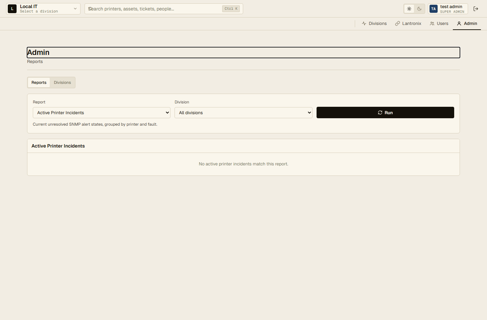
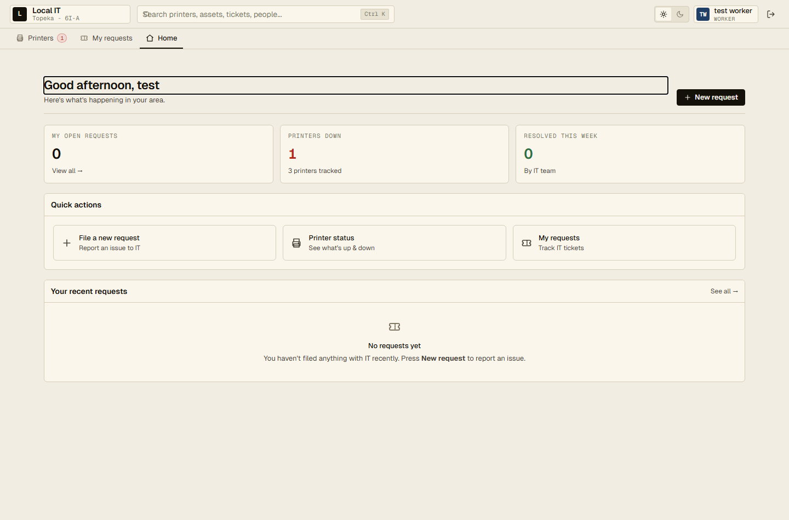
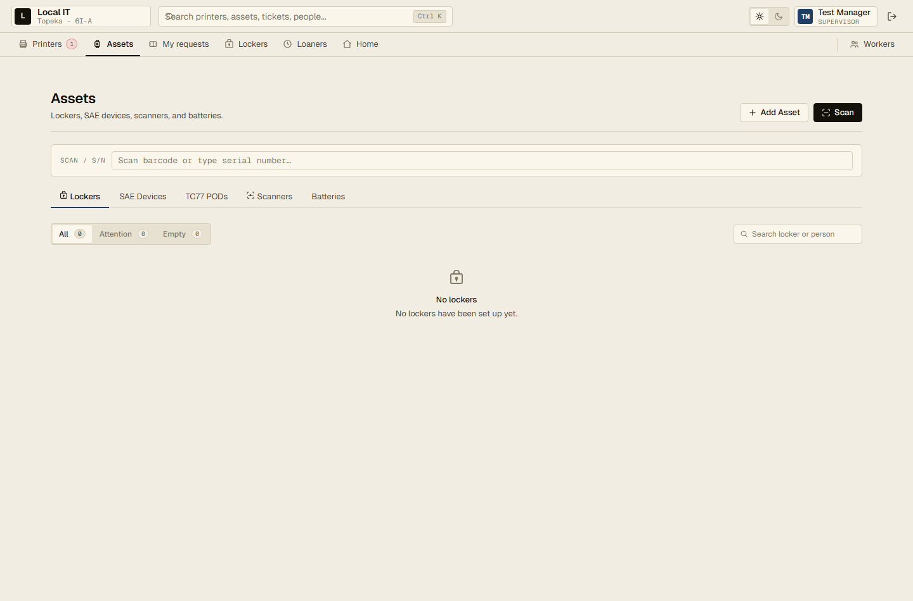
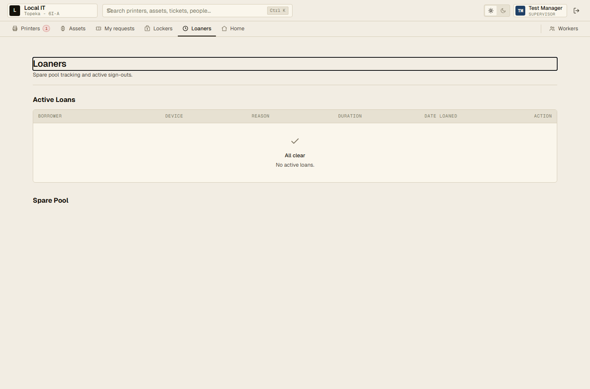
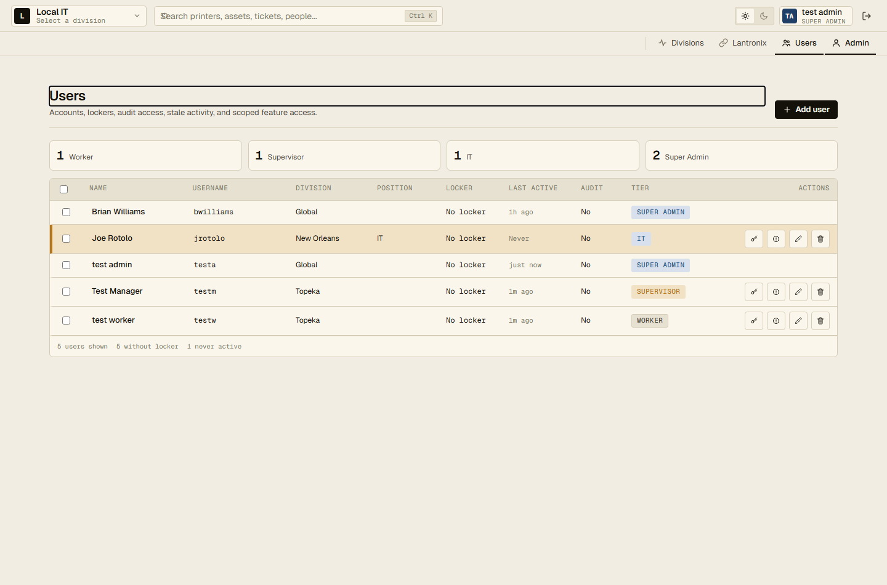
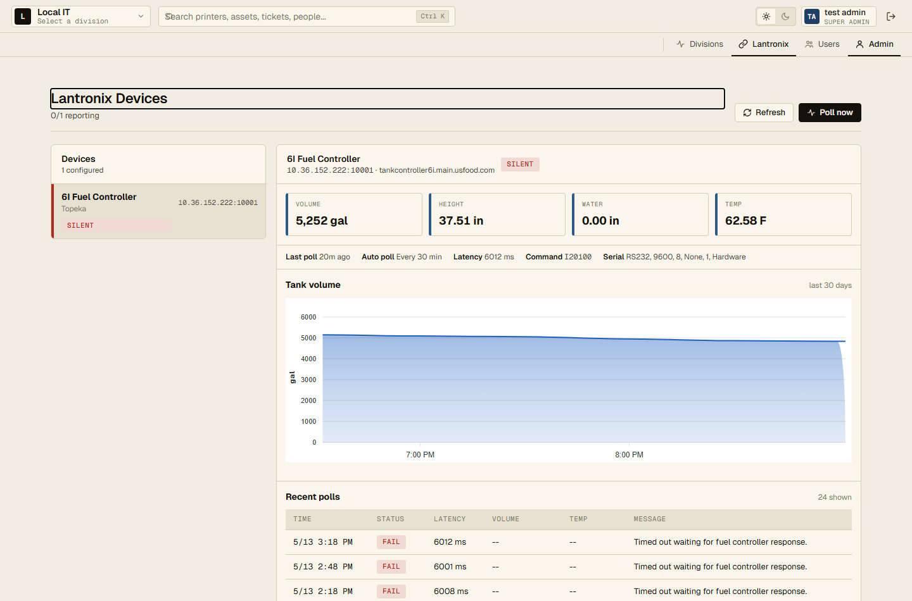
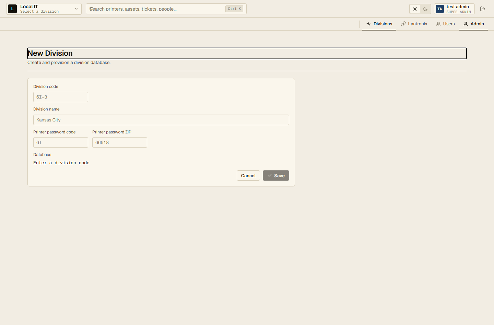

Functionality walkthrough
Topeka IT Portal Guide
A short visual guide to the real portal experience for Super Admins, Managers, and Workers.
Actual screens
Captured from the live local portal using the test role accounts.
Manager-ready
Focused on what people click, see, and hand off.
Simple flows
Create workers, assign lockers, track gear, and report issues.
Clear escalation
Workers report, Managers coordinate, IT and Admin resolve.
Portal frame
The app uses one consistent shell
Every role starts with the same top bar, search, role chip, horizontal navigation, and live fleet pulse.
Search printers, assets, tickets, people...
TM Test Manager
Supervisor
Printers
Assets
My requests
Lockers
Loaners
Home
Workers
Search is global
The command search sits at the top of the app and is visible across roles.
Navigation is permission-driven
Workers see fewer actions, Managers see floor tools, and Super Admins see system tools.
Fleet pulse stays visible
Printer, ticket, asset, and sync signals stay near the top while users move through pages.
The guide follows the actual warm-paper UI: compact cards, thin borders, mono labels, and exception-first operational views.
Role views
Each role lands in a different workspace
The same portal adapts from simple reporting to shift coordination to system oversight.
Super Admin
Reports, divisions, Lantronix monitoring, and user access across the portal.
Reports
Divisions
Users

Manager
A shift workspace for workers, lockers, loaners, assets, printers, and requests.
Workers
Assets
Loaners
Worker
A clean home page for new requests, printer status, and personal ticket tracking.
Requests
Printers
Home

Manager home
Managers start with the shift workspace
The first screen answers: who needs help, what equipment is out, what printers need attention, and where to go next.
Employee lookup
Search a worker by name to quickly see locker and device context.
Action tiles
Managers jump directly to lockers, loaners, assets, printers, crew requests, or a new request.
Exceptions stay visible
Outstanding devices, recent crew requests, and devices needing attention sit below the action row.
This page is intentionally practical: it supports the shift without becoming a technical dashboard.
People flow
How a Manager creates a worker
The Manager opens Workers, adds a row, fills account details, and saves the new worker in the current division.
1
Open Workers
Use the top navigation. Managers see the page labeled Workers.
2
Add user
Click Add user. The new editable row appears in the table.
3
Fill details
Name, username, position, locker, audit flag, tier, and initial password.
4
Save
The worker can sign in and then use requests and printer status.
Managers can create and edit lower-tier Worker accounts. Higher access changes and password resets stay with Admin or Super Admin permissions.
Locker shortcut
Managers can also open a locker, create a worker there, and assign that worker to the locker in the same flow.
Gear flow
Lockers and assets show where equipment belongs
Managers use lockers for physical assignment and the asset console for scanning, category views, status, and pairing.
Lockers
Create lockers, filter empty or attention lockers, assign users, assign devices, and mark audits complete.
Assets
Scan or search, then work through tabs for lockers, SAE devices, TC77 PODs, scanners, and batteries.

Loaners
Issue a spare, select employee, reason, duration, and comments. Return it when the device comes back.

Printers
Printer status is exception-first: down and warning printers are visible, healthy printers stay quiet.
Request flow
Workers and Managers send issues to IT
Requests are intentionally simple: open a new request, attach the related printer or asset if needed, and track status.
Worker home
Workers can create a request, check printers, and review their own tickets.
My requests
Both Workers and Managers can filter Active, Resolved, and All requests.
IT sees the full ticket queue, assigns work, updates status, adds resolution notes, and closes the ticket.
Super Admin
System tools stay separate from daily shift work
Super Admins handle cross-division reporting, division setup, access, and special monitoring pages.
Reports
Run active incidents, monitoring/auth bursts, fault trends, and printer error reports.
Users
See all portal users, divisions, roles, last active state, and scoped access actions.

Lantronix
Review configured gateways, tank readings, poll status, recent samples, and raw responses.

New division
Create a division, configure printer password pieces, and provision the database.

Quick reference
Who uses what
Use this page as the quick handoff summary when explaining the portal to managers.
Worker
Report issues and check printer status.
Home
My requests
Printers
Manager
Coordinate people, lockers, equipment, loaners, requests, and printer awareness.
Workers
Lockers
Assets
Loaners
Requests
Printers
Super Admin
Maintain divisions, access, reporting, and advanced monitoring.
Admin
Divisions
Users
Lantronix
Reports
Daily rhythm: Workers report issues, Managers coordinate floor equipment and people, IT resolves operational work, and Super Admins handle system-level oversight.